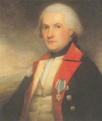

James Fairlie
James Fairlie (sometimes "Fairley") was said to have been born in New York City in 1757 or 1759 and was of Scottish ancestry. His father was said to have been captain of a ship in the Havana trade. James was a Revolutionary war officer who settled in Albany after the war. 
Still in his teens, in 1776 Fairlie was commissioned and ensign an then second lieutenant in the First New York Regiment of the Continental Line. By 1778, he had been promoted to major and served as aide-de-camp to General Von Steuben til the end of the war. He was on active duty with the Revolutionary army and was noted as a recruiter. After the war, he sought to acquire and trade in military bounties and bounty rights. In 1791, he was accorded a pension for service.
In August 1786, he married young Mary Yates at the Albany Presbyterian church. The marriage produced several children before 1800 who were christened in Albany churches. He supported the Albany Dutch church and, in 1788, was a lay delegate to an Episcopal convention in New York City. His wife was the daughter of Albany leader Robert Yates. Fairlie's long career in public service benefitted from the agency of his illustrious father-in-law and also from his lively wit and good humor.
These Fairlies set out to raise their family in a house in the first ward of Albany. He bought and sold a number of lots in Albany. He also was involved in a number of community-based organizations. He was a noted Federalist and was marshall of the Albany ratification parade in 1788. An Albany mainstay in 1790, a decade later, he was gone. In 1799, his Albany property was held by "Gin, a negro woman."
By 1800, he had re-located to New York City - where he lived for the remainder of his life. His home at 41 Cortlandt Street was a well-known landmark. He was the clerk of the Circuit Court of New York City for thirty years and a New York City alderman. In 1796, he also was named clerk of the New York State Supreme Court. He was one of the founding members of the New York Society of the Cincinnati.
James Fairlie died in New York City in October 1830. He had lived for more than seventy years.
According to the Memorial History of the City of New York, "Major James Fairlie was the son of a New York merchant, and the grandson of a Scottish midshipman who settled in America early in the eighteenth century. He became aide to Baron Steuben, served with that officer through the war, and shared his home in western New York. He held various public positions, and was a delightful companion; his sallies of wit often caused outbursts of laughter from General Washington himself. He married a daughter of Chief Justice Yates. Their daughter Mary was a favorite with Halleck and Irving, and, like her father, noted for her wit."
Portrait painted by Ralph Earl in 1787. Copied from online posting. An engraved version appears in Wilson's Memorial History, p. 118.